Portfolio
L'Evoluzione dell'Artista
Dalla soffitta dei ricordi al palcoscenico della vita
Portfolio versione italiana
Mi chiamo Giacomo De Troia e sono pittore professionista. La mia attività artistica ha inizio nel 1990, con anni di sperimentazione personale e di studio accanto ad alcuni maestri della pittura italiana dell'epoca. Nel 1998, il maestro Guerrino Bardeggia di Cattolica diventa il mio mentore, incoraggiandomi a sviluppare un linguaggio pittorico personale.
In quegli anni prende forma la mia personalità artistica, che nel 2004 viene definita "Pittura sul Teatro della Vita" dai Dott. Giuseppe e Teodosio Martucci, in una recensione pubblicata sulla rivista Artecultura di Milano – Brera.
Questa tematica nasceva dal desiderio di tradurre i miei stati d'animo e le mie sensazioni in immagini. I personaggi prendevano vita all'interno di una soffitta, luogo dei ricordi, dove ogni baule aperto trasformava memorie personali in immagini da rappresentare. La soffitta, spesso confusa con un palcoscenico per le assi di legno, diventava il teatro in cui mostrare questi ricordi agli spettatori, dando origine al nome "Teatro della Vita".
I personaggi erano maschere umanizzate: alcuni presentavano un naso a ciliegia, richiamando vagamente un clown, mentre altri indossavano vere e proprie maschere, pur mantenendo tratti e gestualità profondamente umani. Questo equilibrio tra maschera e umanità sottolineava il confine sottile tra identità, memoria e immaginario.
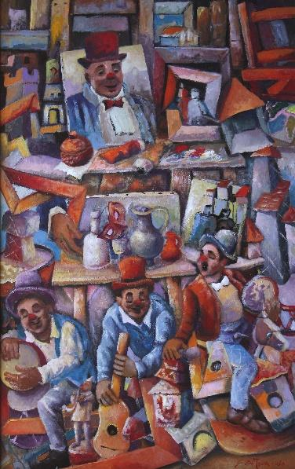
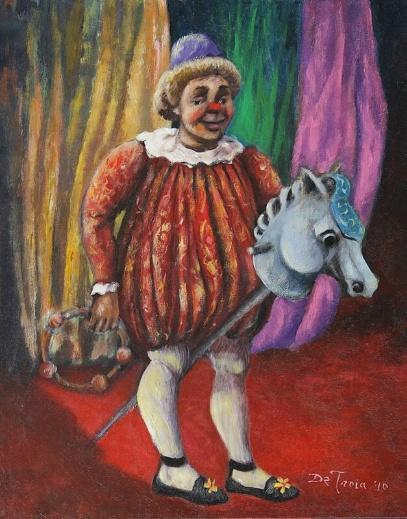
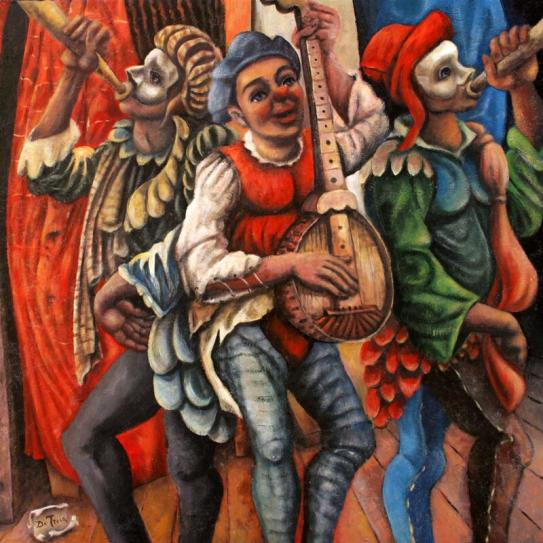
Con il passare degli anni, la soffitta si apre e i ricordi si estendono verso scenari esterni, dove sullo sfondo si intravedono cieli e piccole casette, ampliando lo spazio della memoria e trasformando l'immaginario in paesaggi sospesi tra realtà e sogno. Gradualmente, realtà e segno iniziano a confondersi: i personaggi diventano forme amorfe, burattini dai tratti surreali, talvolta ancora riconoscibili dalla ciliegina al naso, altre volte del tutto assenti, sospesi sempre più tra umano e fantastico.
Il dipinto "L'Uomo di Latta" rappresenta l'emblema di questo crocevia evolutivo. La scena è interamente ambientata nella soffitta, che torna a essere luogo originario e simbolico, ma si articola su più piani, trasformandosi in una metafora del tempo e delle diverse fasi della mia pittura. Nel piano più arretrato compare il personaggio umano con la ciliegina al naso, collocato al centro ma in lontananza, come espressione di un linguaggio pittorico appartenente al passato. Sul lato sinistro, in un piano intermedio, è presente il burattino metamorfico, ancora segnato dalla ciliegina. Nel suo petto si apre una piccola porticina verso l'esterno, simbolo di un passaggio possibile, di un'apertura dalla dimensione intima del ricordo verso il mondo e la realtà. In primo piano, infine, si impone la nuova maschera, con un naso più realistico, espressione di una figura rinnovata, consapevole e ormai distante dall'origine. La soffitta diventa così uno spazio metamorfico e mentale, teatro di una trasformazione continua, in cui convivono passato, transizione e presente.
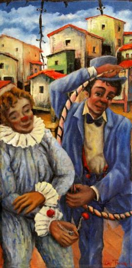
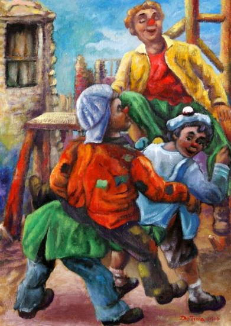
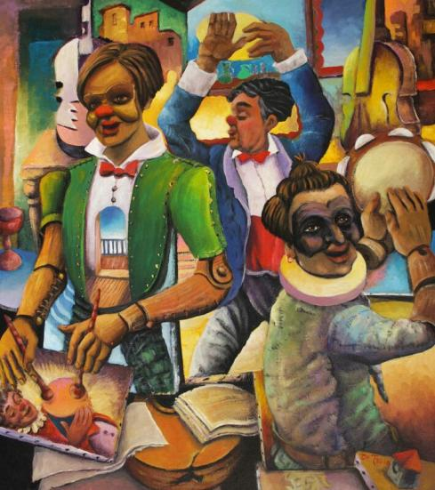
Uscito dalla soffitta, le rappresentazioni oniriche dei ricordi si trasformano in riflessioni sull'attualità. Sentivo sempre più il bisogno di denunciare ciò che accadeva intorno a me. La serie di dipinti che segue rappresenta alcune delle tematiche di denuncia sociale su cui ho concentrato la mia ricerca.
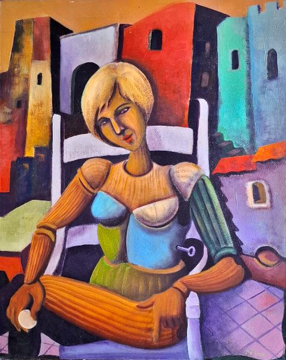
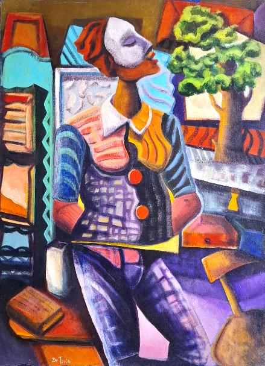
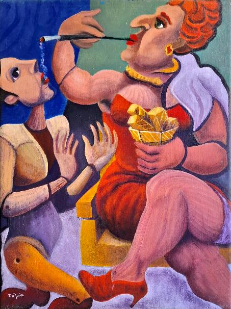
Ad esempio, in "L'Obolo" è rappresentata una marionetta che simboleggia l'uomo: una moneta sulla mano allude al prezzo da pagare per ogni scelta. Tuttavia, queste scelte non sono sempre libere, poiché la marionetta è azionata da una chiave, simbolo di come qualcuno possa muovere i fili e condizionare le decisioni altrui.
In "L'Uomo di pezze" il personaggio porta con sé tutte le sue esperienze, siano esse belle, amare o dolorose. Nel dipinto, questo uomo è composto dalle "pezze" del vissuto che ha attraversato. Nonostante tutto, il suo volto è fiero e rivolto in avanti, verso un albero che sta nascendo, immagine di rinascita. A prescindere dalle difficoltà e dal dolore, egli mantiene la speranza e lo sguardo rivolto al futuro.
In "Servilismo", un demone mascherato da donna tiene in mano dei lingotti d'oro, incarnazione del Dio Denaro e del potere. Con il piede piega un burattino, disposto pur di arrivare al denaro a ingoiare perfino la cenere della sigaretta che il Dio Denaro sta fumando.
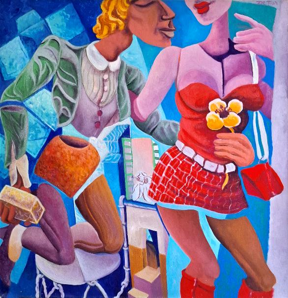
Nel dipinto "Boccadirosa", ispirato all'omonima canzone di Fabrizio De André, affronto e denuncio la violenza e la sottomissione della donna rispetto all'uomo, richiamando il tema dei femminicidi. La figura maschile, con un lingotto d'oro in mano, rappresenta il potere che tenta di possedere il corpo femminile, manifestazione delle dinamiche di sopraffazione e controllo.
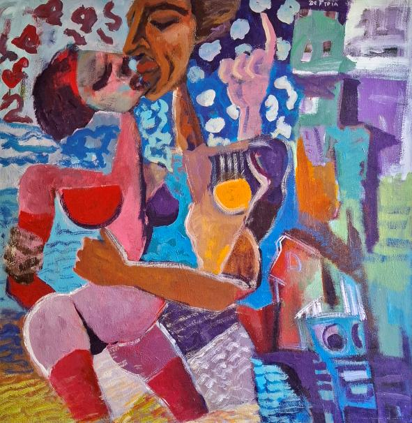
Alla stessa tematica dei femminicidi e della sottomissione della donna si collega anche "Amore Alieno", in cui ho affrontato il tema in chiave più surrealista e "alienata". Con questo dipinto ho voluto mostrare la crudeltà e la violenza insite in queste relazioni, rappresentando la distanza emotiva e psicologica tra vittima e carnefice attraverso figure deformate e spazi metaforici, amplificando così la drammaticità della denuncia sociale.
Questi tre dipinti appartengono a una serie dedicata agli omaggi, in cui celebro persone, figure e istituzioni che hanno ispirato la mia creatività e il mio sguardo sul mondo. Attraverso l'arte, rendo omaggio al cinema, all'arte, alla moda e all'impegno civile.
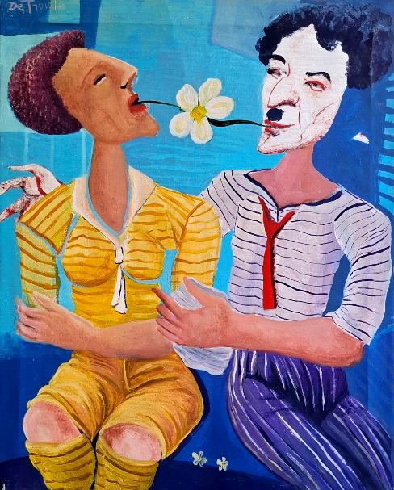
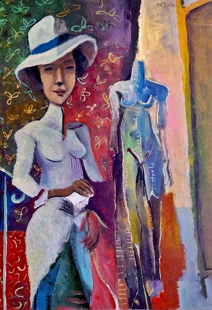
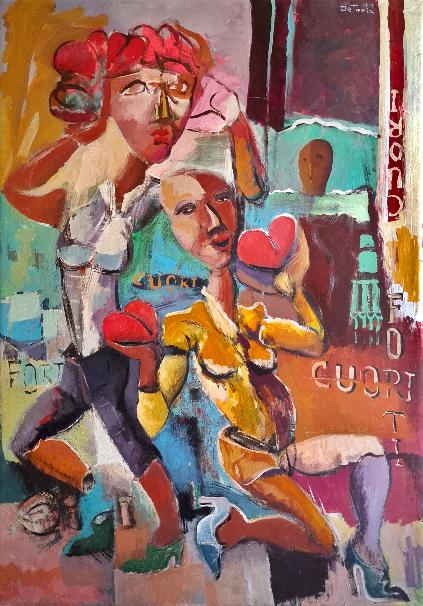
"Andrea e Nicol" – Omaggio all'arte e al cinema: a sinistra una figura che richiama Picasso rappresenta l'arte, mentre a destra una figura che ricorda Charlie Chaplin evoca il cinema. I due mondi si incontrano e si uniscono attraverso un delicato fiore, segno di armonia e ispirazione.
"Coco" – Omaggio alla moda, incarnata dalla figura di Coco Chanel, icona di eleganza e creatività, che diventa protagonista di un universo pittorico dove stile e personalità si fondono.
"Cuori Forti" – Omaggio alla Protezione Civile durante il periodo del Covid-19: figure che sorreggono cuori, simbolo del coraggio, della dedizione e della solidarietà di chi ha assistito la comunità in tempi difficili.
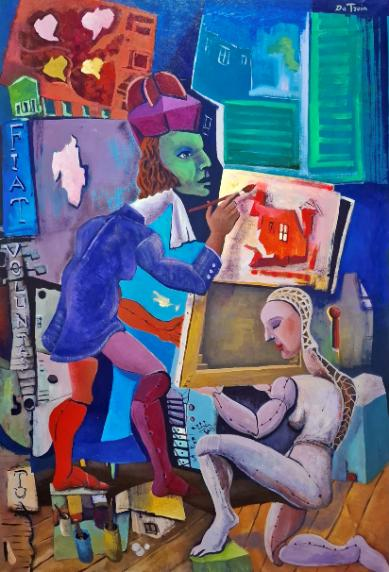
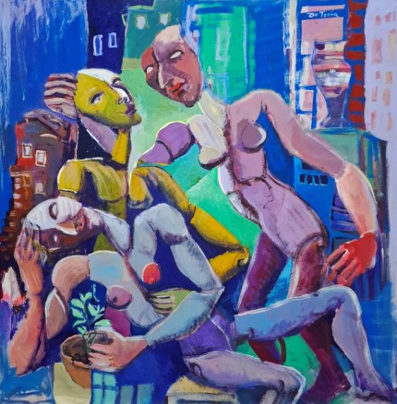
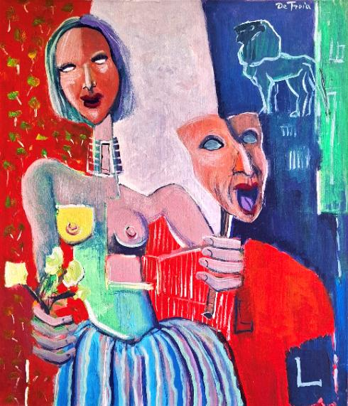
"Fiat Voluntas Tua" – La scena rappresenta un prelato a sinistra che sottomette un paggio, un fedele. Il dipinto esplora il tema del potere e della sua capacità di dominare, mostrando il delicato equilibrio tra autorità, obbedienza e controllo.
"I Custodi della Vita" – Tre figure, dalle sembianze di manichini con volti indefiniti e occhi vuoti, sorvegliano e proteggono una pianta che sta crescendo: la vita. L'assenza di tratti definiti e lo sguardo vuoto evocano l'universalità dei custodi, simbolo di chi protegge la vita senza cercare gloria o riconoscimento, incarnando una forza silenziosa e trascendente.
"Leonida" – La figura femminile richiama il coraggio e la determinazione, sorreggendo da una parte la maschera della commedia greca, evocazione della drammaticità della vita umana, e dall'altra dei fiori, simbolo di speranza e rinascita. La forza necessaria per affrontare le difficoltà è resa evidente dalla presenza di un leone sulle spalle della figura, icona di coraggio e resilienza.
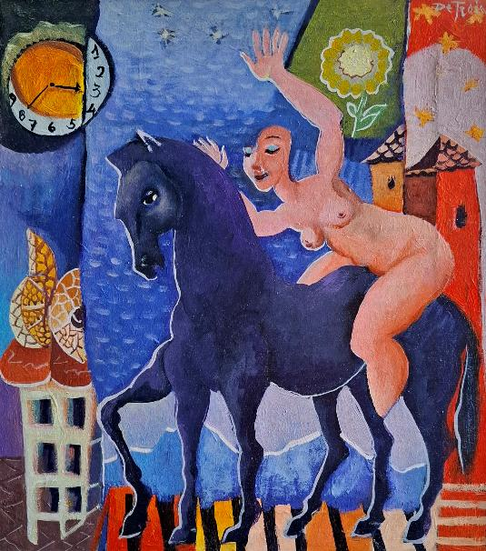
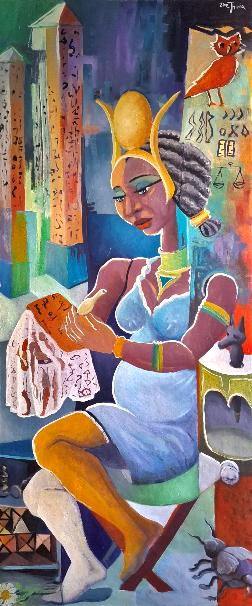
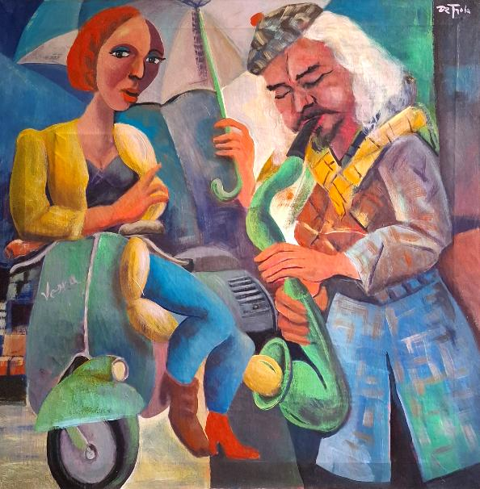
Nel mio percorso porterò sempre con me i temi della vita che mi hanno accompagnato fin dall'inizio. Dalla soffitta dei ricordi, primo palcoscenico dei miei burattini, sono approdato a uno spazio più ampio e universale: il palcoscenico della vita. Qui, oggi, i miei personaggi continuano a essere il linguaggio attraverso cui racconto me stesso, le mie esperienze e le idee che sento il bisogno di esprimere, trasformando la pittura in testimonianza, riflessione e denuncia.
Di seguito presento una serie di dipinti che testimoniano la mia maturità pittorica, frutto di anni di sperimentazione e di un percorso di scoperta di me stesso. Pur esplorando nuove forme, linguaggi e dimensioni espressive, i miei lavori continuano a dialogare con il passato: dai ricordi custoditi nella soffitta, fino al palcoscenico della vita, ogni opera porta con sé un filo che collega ciò che sono stato a ciò che continuo a diventare.
Portfolio — English Version
My name is Giacomo De Troia, and I am a professional painter. My artistic activity began in 1990, with years of personal experimentation and study alongside some of the masters of Italian painting of the time. In 1998, the master Guerrino Bardeggia from Cattolica became my mentor, encouraging me to develop a personal pictorial language.
In those years, my artistic personality took shape, which in 2004 was defined as "Painting on the Theatre of Life" by Dr. Giuseppe and Teodosio Martucci in a review published in the magazine Artecultura in Milan – Brera.
This thematic approach was born from the desire to translate my moods and sensations into images. The characters came to life inside an attic, a place of memories, where every trunk opened transformed personal recollections into images to be represented. The attic, often confused with a stage because of the wooden beams, became the theater in which to show these memories to viewers, giving rise to the name "Theatre of Life."
The characters were humanized masks: some featured a cherry-shaped nose, vaguely recalling a clown, while others wore actual masks, yet maintaining deeply human traits and gestures. This balance between mask and humanity highlighted the subtle boundary between identity, memory, and imagination.
"La Maschera" 76x120 (2010) | "Al Varietà" 40x50 (2010) | "I Menestrelli" 85x85 (2011)
Over the years, the attic opens, and the memories extend towards external scenarios, where skies and small houses can be glimpsed in the background, expanding the space of memory and transforming the imagination into landscapes suspended between reality and dream. Gradually, reality and mark-making begin to blend: the characters become amorphous forms, puppets with surreal traits, sometimes still recognizable by the cherry nose, other times completely absent, increasingly suspended between human and fantastic.
The painting "The Tin Man" represents the emblem of this evolutionary crossroads. The scene is entirely set in the attic, which returns to being the original and symbolic place, but is articulated across multiple planes, transforming into a metaphor of time and the different phases of my painting. In the farthest plane, the human figure with the cherry nose appears, placed in the center but in the distance, as an expression of a pictorial language belonging to the past. On the left, in an intermediate plane, the metamorphic puppet is present, still marked by the cherry. In its chest, a small door opens towards the outside, symbolizing a possible passage, an opening from the intimate dimension of memory towards the world and reality. In the foreground, the new mask rises, with a more realistic nose, expression of a renewed, aware figure now distant from the origin. The attic thus becomes a metamorphic and mental space, a theater of continuous transformation, where past, transition, and present coexist.
"The Duo of Hope" 48x90 (2011) | "Memories of Play" 50x70 (2011) | "The Tin Man" 80x90 (2012)
Having left the attic, the dreamlike representations of memories transform into reflections on current reality. I increasingly felt the need to denounce what was happening around me. The series of paintings below represents some of the social denunciation themes on which I focused my research.
"The Oblation" 65x85 (2015) | "The Patchwork Man" 65x85 (2015) | "Servility" 65x85 (2016)
For example, in "The Oblation", a marionette represents man: a coin in the hand alludes to the price to pay for every choice. However, these choices are not always free, as the marionette is operated by a key, symbolizing how someone can move the strings and condition the decisions of others.
In "The Patchwork Man", the character carries all his experiences, whether beautiful, bitter, or painful. In the painting, this man is composed of the "patches" of his lived experiences. Despite everything, his face is proud and turned forward, towards a tree that is growing, an image of rebirth. Regardless of difficulties and pain, he maintains hope and looks to the future.
In "Servility", a demon masked as a woman holds gold bars, embodying the God Money and power. With her foot, she bends a puppet, willing to swallow even the ashes of the cigarette that God Money is smoking just to reach the gold.
In the painting "Boccadirosa", inspired by the song of the same name by Fabrizio De André, I confront and denounce violence and the subjugation of women by men, addressing the theme of femicides. The male figure, holding a gold bar in his hand, represents the power attempting to possess the female body, a manifestation of dynamics of oppression and control.
The same theme of femicides and the subjugation of women is also addressed in "Alien Love", where I approached it in a more surrealist and "alienated" key. In this painting, I wanted to show the cruelty and violence inherent in these relationships, representing the emotional and psychological distance between victim and perpetrator through deformed figures and metaphorical spaces, thus amplifying the drama of social denunciation.
In my path, I will always carry with me the themes of life that have accompanied me from the beginning. From the attic of memories, the first stage for my puppets, I have reached a wider and more universal space: the stage of life. Here, today, my characters continue to be the language through which I narrate myself, my experiences, and the ideas I feel the need to express, transforming painting into testimony, reflection, and denunciation.
Below, I present a series of paintings that testify to my artistic maturity, the result of years of experimentation and a path of self-discovery. While exploring new forms, languages, and expressive dimensions, my works continue to dialogue with the past: from the memories kept in the attic to the stage of life, each work carries a thread connecting what I have been to what I continue to become.
Portfolio — Version Française
Je m'appelle Giacomo De Troia et je suis peintre professionnel. Mon activité artistique a commencé en 1990, avec des années d'expérimentation personnelle et d'études aux côtés de certains maîtres de la peinture italienne de l'époque. En 1998, le maître Guerrino Bardeggia de Cattolica est devenu mon mentor, m'encourageant à développer un langage pictural personnel.
C'est à cette époque que ma personnalité artistique a pris forme, et en 2004 elle a été définie comme « Peinture sur le Théâtre de la Vie » par les Drs. Giuseppe et Teodosio Martucci dans une critique publiée dans la revue Artecultura à Milan – Brera.
Cette thématique est née du désir de traduire mes états d'âme et mes sensations en images. Les personnages prenaient vie à l'intérieur d'un grenier, lieu des souvenirs, où chaque coffre ouvert transformait des mémoires personnelles en images à représenter. Le grenier, souvent confondu avec une scène en raison des poutres en bois, devenait la scène de vie où montrer ces souvenirs aux spectateurs, donnant naissance au nom « Théâtre de la Vie ».
Les personnages étaient des masques humanisés : certains avaient un nez en forme de cerise, rappelant vaguement un clown, tandis que d'autres portaient de véritables masques, tout en conservant des traits et des gestes profondément humains. Cet équilibre entre masque et humanité soulignait la frontière subtile entre identité, mémoire et imaginaire.
"La Maschera" 76x120 (2010) | "Al Varietà" 40x50 (2010) | "I Menestrelli" 85x85 (2011)
Au fil des ans, le grenier s'ouvre et les souvenirs s'étendent vers des scénarios extérieurs, où l'on aperçoit dans le fond des ciels et de petites maisons, élargissant l'espace de la mémoire et transformant l'imaginaire en paysages suspendus entre réalité et rêve. Progressivement, réalité et trace picturale commencent à se confondre : les personnages deviennent des formes amorphes, des marionnettes aux traits surréalistes, parfois encore reconnaissables à leur nez en forme de cerise, d'autres fois complètement absente, de plus en plus suspendus entre humain et fantastique.
La peinture "L'Homme de Fer-blanc" représente l'emblème de ce carrefour évolutif. La scène se déroule entièrement dans le grenier, qui redevient le lieu originel et symbolique, mais s'articule sur plusieurs plans, se transformant en métaphore du temps et des différentes phases de ma peinture. Sur le plan le plus éloigné apparaît le personnage humain au nez en cerise, placé au centre mais au loin, comme expression d'un langage pictural appartenant au passé. Sur le côté gauche, à un plan intermédiaire, se trouve la marionnette métamorphique, encore marquée par la cerise. Dans sa poitrine s'ouvre une petite porte vers l'extérieur, symbole d'un passage possible, d'une ouverture de la dimension intime du souvenir vers le monde et la réalité. Au premier plan, enfin, se dresse le nouveau masque, avec un nez plus réaliste, expression d'une figure renouvelée, consciente et désormais éloignée de l'origine. Le grenier devient ainsi un espace métamorphique et mental, scène de vie d'une transformation continue, où coexistent passé, transition et présent.
"Le Duo de l'Espoir" 48x90 (2011) | "Souvenirs de Jeu" 50x70 (2011) | "L'Homme de Fer-blanc" 80x90 (2012)
Sorti du grenier, les représentations oniriques des souvenirs se transforment en réflexions sur l'actualité. Je ressentais de plus en plus le besoin de dénoncer ce qui se passait autour de moi. La série de peintures suivante représente certaines des thématiques de dénonciation sociale sur lesquelles j'ai concentré ma recherche.
"L'Obole" 65x85 (2015) | "L'Homme en Pièces" 65x85 (2015) | "Servilité" 65x85 (2016)
Par exemple, dans "L'Obole", une marionnette représente l'homme : une pièce dans la main fait allusion au prix à payer pour chaque choix. Cependant, ces choix ne sont pas toujours libres, car la marionnette est actionnée par une clé, symbole du fait que quelqu'un peut tirer les ficelles et influencer les décisions des autres.
Dans "L'Homme en Pièces", le personnage porte en lui toutes ses expériences, qu'elles soient belles, amères ou douloureuses. Dans la peinture, cet homme est composé des "pièces" de son vécu. Malgré tout, son visage est fier et tourné vers l'avant, vers un arbre en train de naître, image de renaissance. Quelles que soient les difficultés et la douleur, il garde l'espoir et le regard tourné vers l'avenir.
Dans "Servilité", un démon masqué en femme tient des lingots d'or, incarnation du Dieu Argent et du pouvoir. Du pied, elle plie une marionnette, prête à avaler même les cendres de la cigarette que le Dieu Argent fume, simplement pour atteindre l'or.
Dans la peinture "Boccadirosa", inspirée de la chanson éponyme de Fabrizio De André, j'affronte et dénonce la violence et la soumission de la femme par rapport à l'homme, abordant le thème des féminicides. La figure masculine, tenant un lingot d'or dans la main, représente le pouvoir tentant de posséder le corps féminin, manifestation des dynamiques d'oppression et de contrôle.
La même thématique des féminicides et de la soumission de la femme est également abordée dans "Amour Aliéné", où j'ai traité le sujet d'une manière plus surréaliste et "aliénée". Dans ce tableau, j'ai voulu montrer la cruauté et la violence inhérentes à ces relations, représentant la distance émotionnelle et psychologique entre victime et bourreau à travers des figures déformées et des espaces métaphoriques, amplifiant ainsi la dramatisation de la dénonciation sociale.
Dans mon parcours, je porterai toujours avec moi les thèmes de la vie qui m'ont accompagné depuis le début. Du grenier des souvenirs, première scène de vie de mes marionnettes, je suis arrivé à un espace plus vaste et universel : la scène de vie de la vie. Ici, aujourd'hui, mes personnages continuent d'être le langage à travers lequel je raconte moi-même, mes expériences et les idées que je ressens le besoin d'exprimer, transformant la peinture en témoignage, réflexion et dénonciation.
Ci-dessous, je présente une série de peintures qui témoignent de ma maturité picturale, fruit d'années d'expérimentation et d'un parcours de découverte de moi-même. Tout en explorant de nouvelles formes, langages et dimensions expressives, mes œuvres continuent à dialoguer avec le passé : des souvenirs conservés dans le grenier jusqu'à la scène de vie, chaque œuvre porte un fil reliant ce que j'ai été à ce que je continue de devenir.